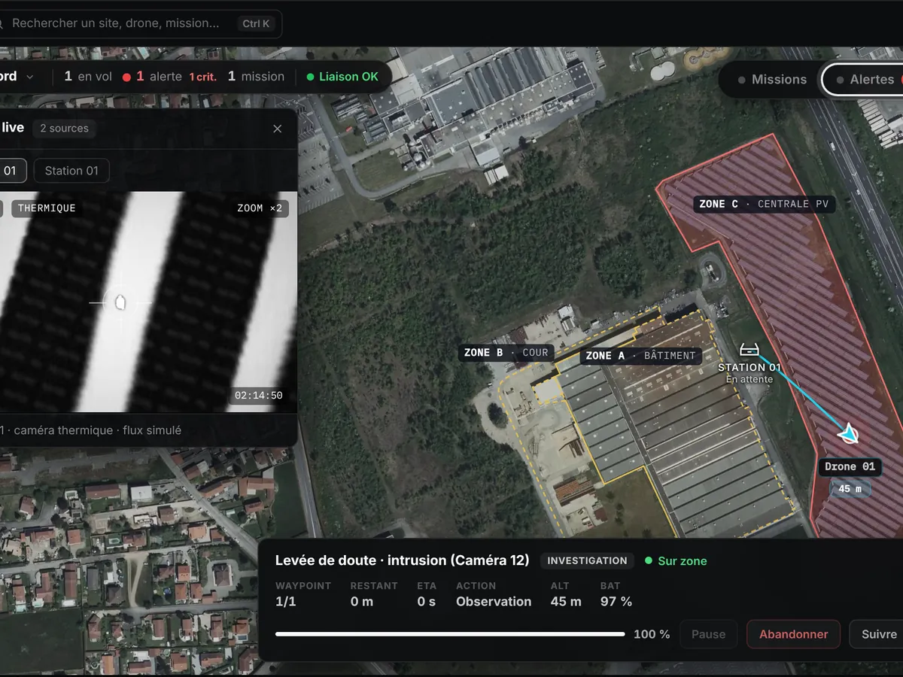
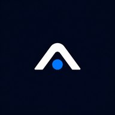
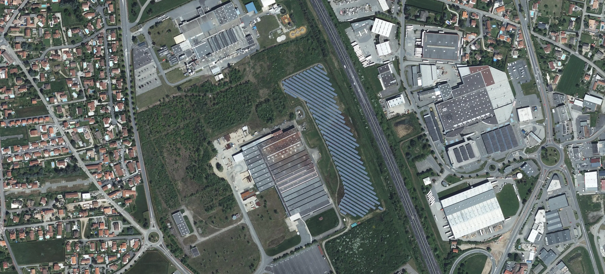

Une station de drones sur votre site, suivie depuis votre PC sécurité.
Le drone décolle seul pour une ronde programmée ou après une alerte. Vos opérateurs voient la scène en direct et décident de la suite.
Ce qui est installé sur votre site.
Trois éléments, déployés et raccordés par nos équipes.
La station
- Abrite le drone entre deux vols.
- Recharge automatique, sans intervention.
- Posée et raccordée sur votre site.
Le drone
- Caméra visible et caméra thermique.
- Vols de jour comme de nuit.
- Jusqu'à 40 ha couverts par vol, selon le site.

La plateforme
- Carte du site et suivi du vol en direct.
- Flux vidéo transmis au PC sécurité.
- Historique de chaque mission.
Deux façons de faire décoller le drone.
Une ronde programmée à l'avance, ou une levée de doute déclenchée par une alerte.
Le drone patrouille selon votre planning.
- 01PlanificationVous fixez trajets, horaires et fréquence.
- 02DécollageLe drone quitte la station à l'heure prévue.
- 03ParcoursIl suit la trajectoire et filme les points sensibles.
- 04RetourIl regagne la station et se recharge.
- 05ArchivageLa mission est enregistrée, images horodatées à l'appui.
Le drone vérifie avant qu'un agent se déplace.
- 01AlerteUne alarme ou une caméra signale un événement.
- 02DépartLe drone part vers la zone concernée.
- 03Sur zoneArrivée en 40 s environ, selon la configuration du site.
- 04VérificationL'opérateur voit la scène en direct, en visible ou en thermique.
- 05DécisionIl lève le doute ou engage une intervention. L'événement est tracé.
La supervision humaine reste possible à chaque étape. Ses modalités sont définies avec vous, selon le cadre réglementaire.
Tout le suivi dans une seule interface.
Prenez la place de l'opérateur. Traitez une alerte du début à la fin.

FLEATAucune notification non lue.

ZONE A · BÂTIMENT ZONE B · COUR ZONE C · CENTRALE PVL'alerte « Intrusion » sera marquée comme clôturée.
Motif de clôture obligatoireL'alerte reste ouverte. Vous pourrez relancer une reconnaissance ou la clôturer.
- Alerte reçue · caméra 12
- Drone sur zone
- Alerte clôturée · personne autorisée
Chaque étape est tracée dans l'historique.
FLEAT Control Center · données de démonstration, temps de vol accéléré. Site réel utilisé à titre d'illustration. Orthophotographie et contours © IGN, Licence Ouverte Etalab 2.0.
Tout le site sur une carte.
Zones, station, position du drone et alertes, sur l'image réelle du site. Plusieurs sites depuis le même écran.
Le flux pour décider.
Vidéo visible ou thermique en direct. L'opérateur constate, puis lève le doute ou engage une intervention.
Chaque action tracée.
Missions, événements et décisions horodatés. Comptes et rôles par utilisateur, journal des actions.
Vous gardez la décision. Nous portons le déploiement.
Ce que nous prenons en charge
- Étude du site et conception des missions
- Préparation du cadre réglementaire
- Installation et raccordement de la station
- Tests, mise en service et formation
- Accompagnement en exploitation
Ce que vous pilotez
- Fixer les zones et les priorités du site
- Suivre les missions depuis l'interface
- Lever le doute et décider d'une intervention
- Gérer les accès des utilisateurs
Connecté à ce que vous avez déjà.
FLEAT s'intègre progressivement aux systèmes de sécurité en place, selon vos besoins.
Chaque connexion est étudiée et déployée par étapes, en fonction de votre environnement.
- Caméras et vidéoUne détection de mouvement peut déclencher le drone.
- AlarmesIntrusion ou alarme technique : le drone part sur la zone.
- Contrôle d'accèsUn accès forcé ou hors horaires devient une mission.
- VMSLes images du drone remontent dans votre logiciel vidéo.
- Supervision existanteVotre PC sécurité garde la main sur la décision.
Ce que nous validons avant d'installer.
Un drone ne s'installe pas partout. Chaque site est étudié avant tout engagement.
Réglementation
Le scénario de vol est préparé selon le cadre applicable à votre site.
Météo
Les conditions de vol sont prises en compte dans la conception des missions.
Faisabilité du site
Emprise, obstacles et connectivité sont évalués au cas par cas.
Étudions ensemble la sécurisation de votre site par drone.
Décrivez-nous votre site et vos enjeux : nous évaluons la faisabilité d'un dispositif adapté à vos contraintes.